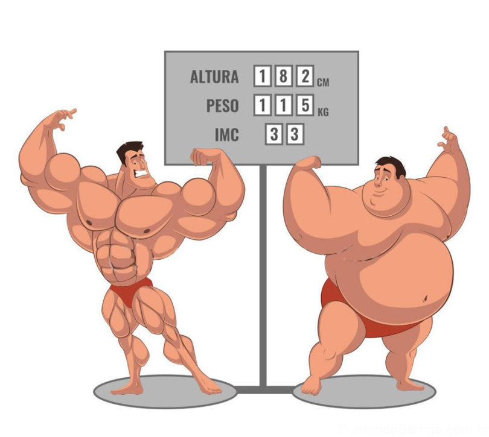

IMC e para que serve?
O IMC é um índice que mede se você está abaixo, dentro ou acima do peso, de acordo com a relação entre seu peso e altura. Descubra como calcular esse índice, quais os valores ideais, as exceções da tabela padrão, a especificidade do IMC para crianças e jovens e muito mais neste artigo completo.
Sobre o calculo de indice corporal.
Para a sua posição na tabela do Índice de Massa Corporal, você precisa de dois valores: seu peso e altura. É só dividir o peso (em quilos) pelo quadrado da altura (em metros), que é obtido pela multiplicação da altura por ela mesma. Então, a fórmula fica assim:
IMC = Peso / Altura².
Se matemática não for o seu forte, você pode usar calculadoras de Índice de Massa Corporal disponíveis na internetExceções do imc
Assim como quase qualquer coisa temos algumas exceções sobre o IMC, Vários grupos possuem características específicas e não se encaixam na tabela do IMC tradicional, como atletas e grávidas. Os primeiros possuem alta quantidade de massa muscular, o que resulta em um IMC acima do considerado normal, mas não significa que eles estejam acima do peso. As gestantes também podem possuir um IMC elevado, devido ao peso do bebê.
"Como diminuir o meu IMC?"
Por mais que não seja 100% confiável, o IMC continua sendo um índice interessante para verificar seu peso em relação à altura. Assim, se você está acima do peso, algumas dicas para diminuir o IMC são:
Consultar um nutricionista para fazer o planejamento das refeições;
Aumentar o gasto calórico, por meio da prática regular de exercícios;
Ter uma alimentação balanceada, que inclua todos os grupos alimentares.
Para emagrecer com saúde, é fundamental que você faça acompanhamento com um médico e um nutricionista. E se busca fazer grandes mudanças em seus hábitos alimentares ou de exercícios físicos, consulte os devidos especialistas.
"Como aumentar o meu IMC?"
Para aqueles que estão abaixo do peso segundo a tabela do índice de massa corporal, algumas dicas são:
Aumentar a massa muscular por meio de atividades físicas, para que as calorias sejam transformadas em músculos, e não em gordura;
Beber pelo menos 2 litros de água por dia – essa quantidade pode variar de acordo com seu peso;
Aumentar o consumo de alimentos ricos em proteínas, vitaminas e minerais, de acordo com um cardápio elaborado pelo nutricionista;
Incluir pelo menos 3 frutas em sua alimentação diária.